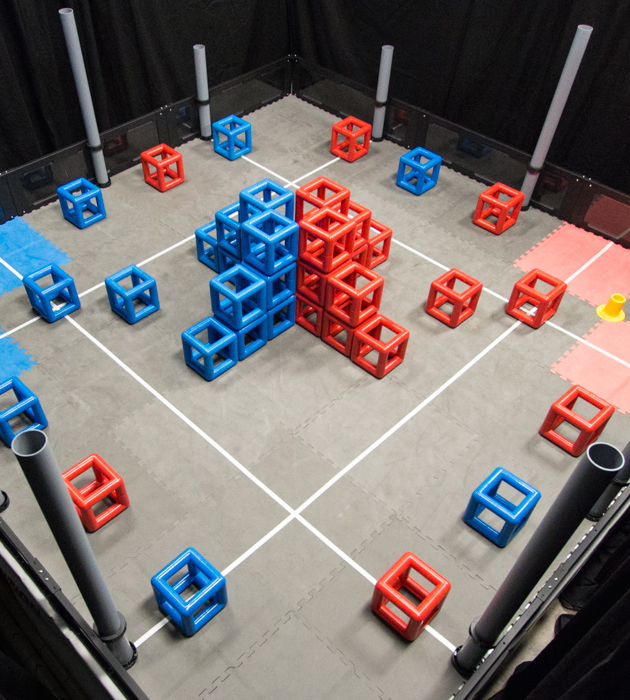

Vex-U
Each year a new game is presented for teams to play. The rules and object of the games vary significantly between years, which keeps teams on their toes to design and build creative and innovative robots to play the game. The 2014-2015 game is called Skyrise.

VEX Skyrise is played on a 12’x12’ square field configured as seen to the left. Two teams – one “red” and one “blue” – compete in matches consisting of a forty-five second autonomous period followed by seventy-five seconds of driver-controlled play.
The object of the game is to attain a higher score than the opposing team by Scoring your colored Cubes in Floor Goals, on Posts or on your Skyrise, by Owning Posts, and by Building your Skyrise Sections.
There are a total of forty-four Cubes, twenty-two red and twenty-two blue, and fourteen Skyrise Sections available Scoring Objects in the game. Most Scoring Objects begin in designated locations on the field, while some are available to be entered into the field during the Match.
Each Robot begins a match on one of their Team Starting Tiles. There are ten Posts and four Floor Goals that Robots can Score Objects onto. The Team with the topmost Cube on a Post Owns the Post. Alliances also earn points for Building Skyrises on their Skyrise Base out of Skyrise Sections, and Scoring Cubes on Skyrises. A bonus is awarded to the Alliance that has the most total points at the end of the Autonomous Period.